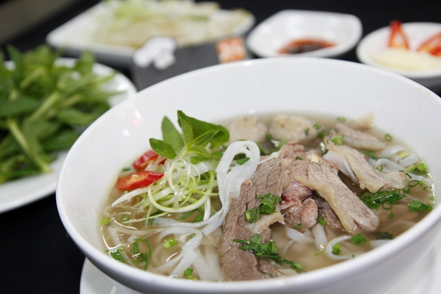
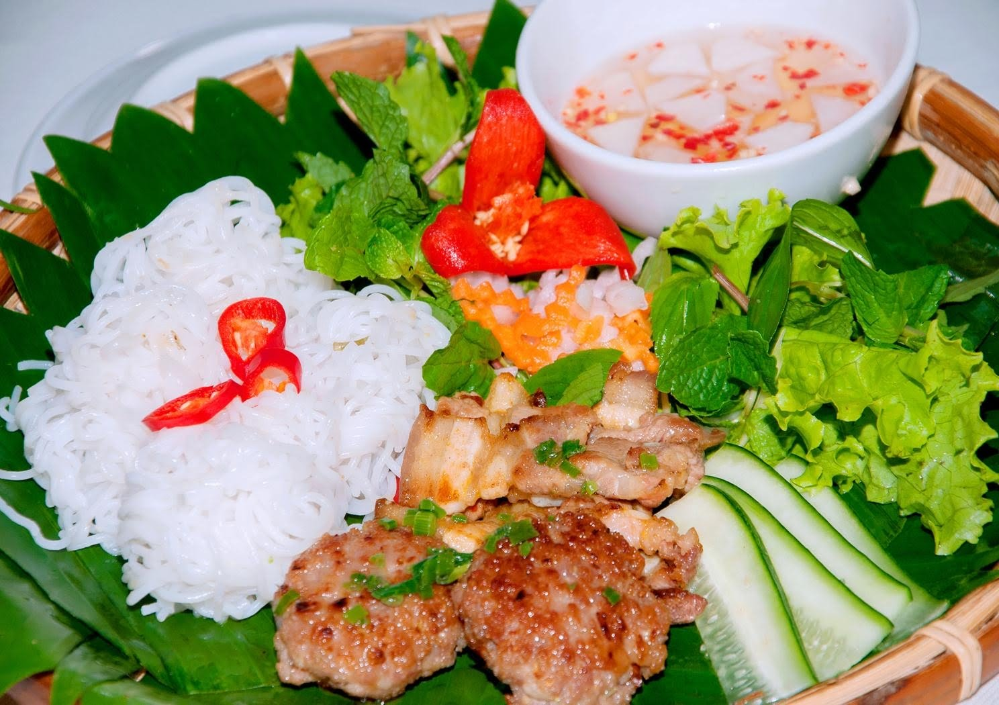
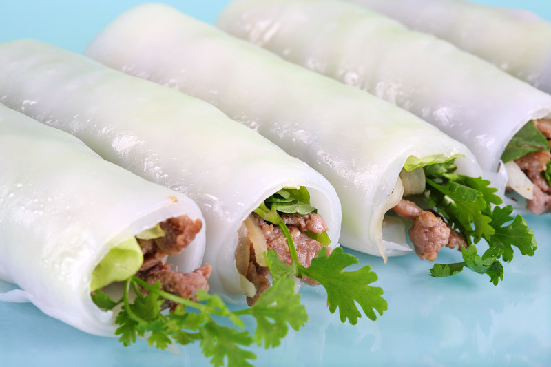
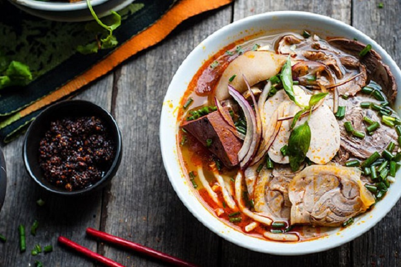
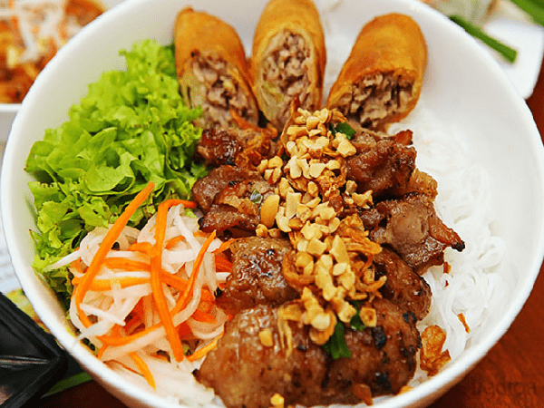
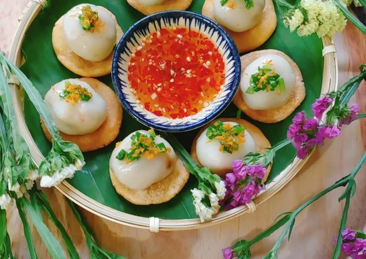
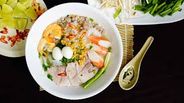
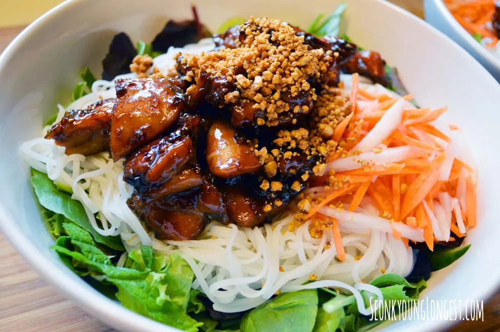
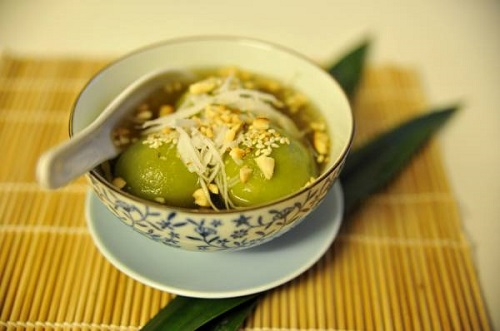

Les plats typiques du Nord Vietnam
Pho
Véritable plat national, il est une sorte d’emblème du pays à travers le monde ! Vous ne pouvez donc pas manquer de le goûter pendant votre séjour à Hanoi.
Cette soupe est servie dans un grand bol comprenant les nouilles de riz pho, la viande (du bœuf ou du poulet), des herbes aromatiques (basilic, ciboulette, coriandre), des pousses de soja et du citron. Tout cela s’harmonise dans un bouillon à base d’os de bœuf. Ce bouillon créera une saveur riche, inoubliable et unique, typique de la cuisine vietnamienne.

Bun cha
Comme la soupe pho ou le cha ca, le bun cha est également l’un des plats emblématiques de Hanoi. C’est certainement l’un des plats dont les voyageurs se souviendront facilement après leur passage dans la capitale vietnamienne.
Le Bun Cha se prépare simplement avec des vermicelles de riz, de la viande de porc, de l’échalote, de l’ail et un bol de sauce de poisson avec du piment, de la papaye et de carotte. Le tout est servi avec des vermicelles et une variété de crudités fraiche avec une sauce aigre-douce. La riche saveur du plat vient surtout du porc grillé.
Le Bun Cha se prépare simplement avec des vermicelles de riz, de la viande de porc, de l’échalote, de l’ail et un bol de sauce de poisson avec du piment, de la papaye et de carotte. Le tout est servi avec des vermicelles et une variété de crudités fraiche avec une sauce aigre-douce. La riche saveur du plat vient surtout du porc grillé.

Pho cuon
Un autre plat typique de la capitale vietnamienne ! Il tient ainsi une place particulière dans le cœur des Hanoiens et est lié au quartier de Truc Bach près du Lac de l’Ouest. Là-bas, vous trouverez facilement de nombreuses échoppes vendant ce plat.
Il est préparé en enveloppant du bœuf frit avec avec de l’oignon, de la laitue, de la coriandre, du basilic et d’autres légumes, le tout recouvert d’une pâte de riz, la même utilisée pour faire des nouilles au Phở.

Les plats typiques du Centre Vietnam
Bun Bo Hue
Le plat populaire emblématique de Hué ! C’est une soupe à base de pâte de riz (« Bun ») et de bœuf (« Bo »).
Le goût particulier de la soupe est obtenue en faisant mijoter des os et du jarret de bœuf avec de la citronnelle, parfum qui prédomine les senteurs du Bun Bo Hué. Mais les saveurs ne s’arrêtent pas là puisqu’il faut ajouter un nombre important de condiments : coriandre, ciboulette, oignon, fleur de bananier, de la menthe… Il ne faut pas oublier le piment et le sucre, sans quoi on ne serait pas dans le Sud Vietnam ! Enfin, le plat contient du mam ruoc (pâte de crevette) et le plus souvent du sang de porc coagulé !

Bun Thit Nuong Hue
Un autre plat de nouille succulent ! Contrairement au Bun Bo Hue, le plat est cette fois-ci servi froid et sec (sans soupe). Si vous ne voulez pas manger de soupe, le Bun Thi Nuong est ce qu’il vous faut !
Les nouilles et le porc grillé à la citronnelle sont mélangés avec de nombreuses herbes aromatiques parfumées, des légumes (carottes, radis blanc, de la papaye, du concombre). Le tout est saupoudré de cacahuètes pilés et d’oignons fris. On vous arrosera enfin votre plat de sauce nuoc mam à l’ail et au piment !

Banh ran it
Un vrai pêché mignon! Des sortes de raviolis à trois étages:
- La base est faite d’une galette de riz frite et croustillante
- Au dessus vous avez un dumpling (boule) de riz gluant farcis d’haricots, de morceaux de crevettes et de poitrines de porc.
- Le tout est couronné par des émincées d’oignons et de crevettes.

Les plats typiques du Sud Vietnam
Hu Tieu
Cette soupe aurait des origines chinoise et cambodgienne mais s’est surtout fait connaitre dans le sud Vietnam. Le Hu Tieu est ainsi devenue la soupe signature de Saigon, au même titre que la Pho pour Hanoi.
Servi dans un grand bol, le hu tieu se compose d’un bouillon clair à base d’os de porc, de nouille de riz, de la viande de porc, de crevettes et d’oeufs de caille. Comme le Pho, Hu Tieu est le nom spécifique de la nouille de riz utilisée comme ingrédient pour ce plat du sud Vietnam. Le riz vient évidemment du delta du Mékong et la pâte de riz est moins épaisse. Comme pour le Pho, les épices et condiments ont une place de choix dans la recette mais pour le Hu Tieu il faut ajouter la touche sucrée sans laquelle elle n’aurait jamais été acceptée par les gens du sud Vietnam!

Bun Thit Nuong
Bun thit nuong est un plat copieux de Saigon! Il se compose de nouille de riz fraiche, de la viande du porc grillée au barbecue, de la laitue, de coriandre, des tranches de concombres, des pousse de soja, des carottes, du basilic, des arachides et de la menthe. Il ne faut pas oublier de l’arroser une fois de plus avec la sauce à base de nuoc mam, de sucre, de citron, de l’ail.

Che
Terminons cette liste… par le dessert! Un dessert sucré, confectionné à partir d’ingrédients très variés : haricots blancs, maïs ou même patates douces. Le tout est arrosé de lait de noix de coco.
